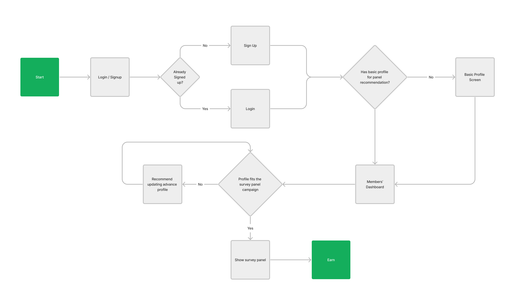
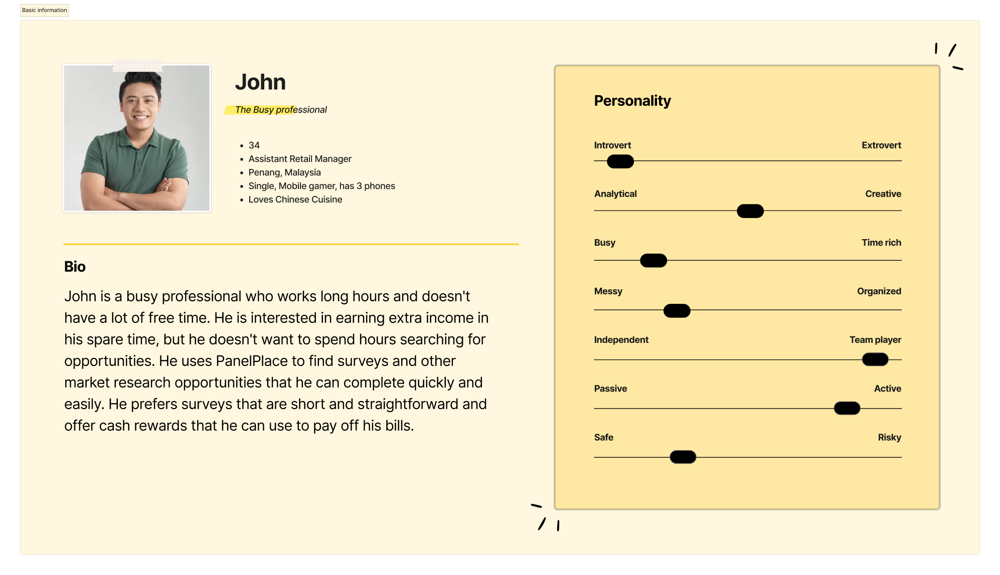
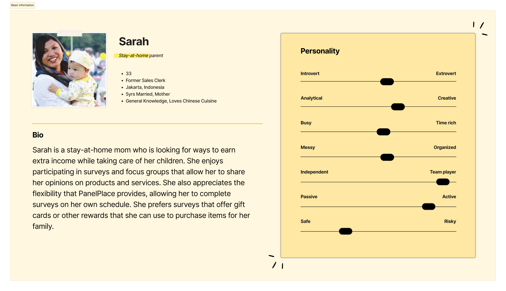
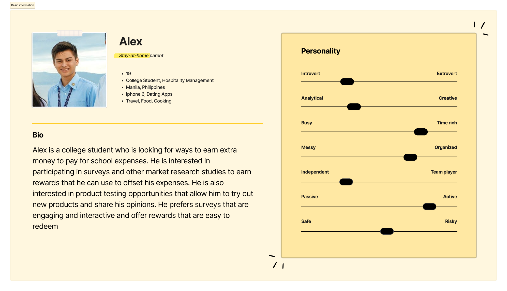
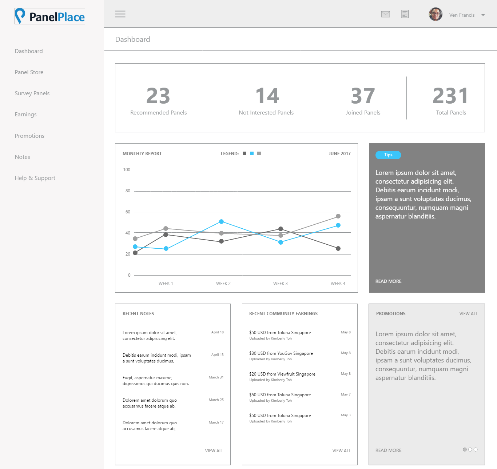
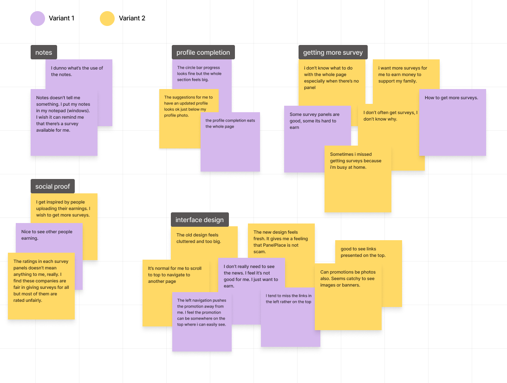
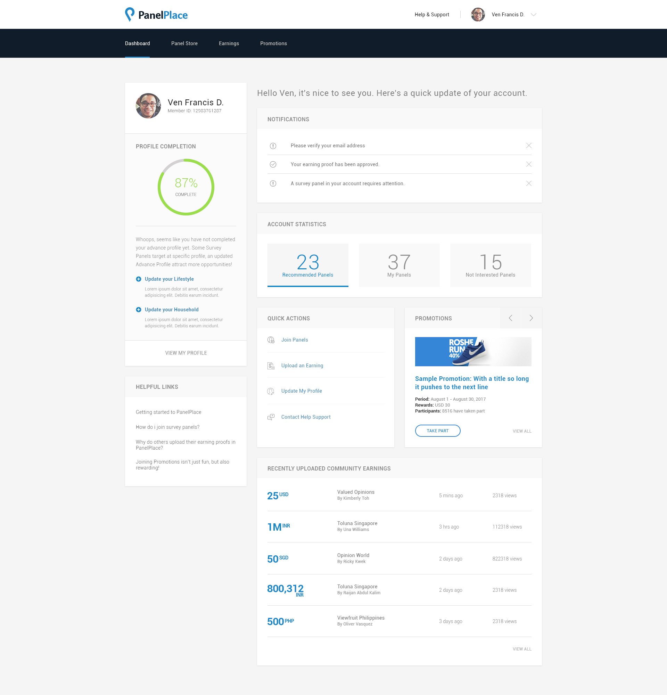
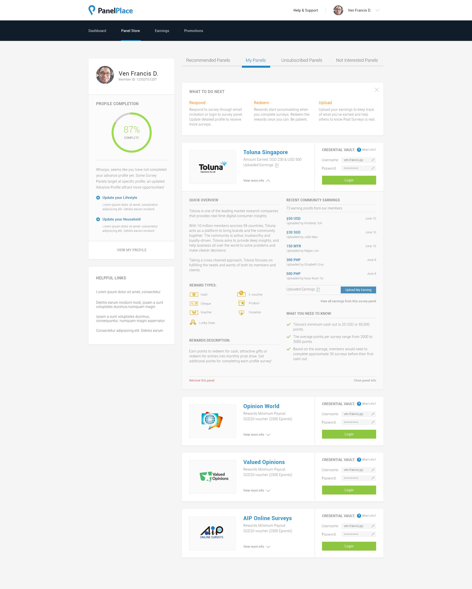

During our initial assessment of the platform, we identified several areas of concern that stemmed from poor design. These included the following:
In light of this feedback, it was clear that our design was demotivating and failing to meet the needs and expectations of our users. We recognized the importance of addressing these issues in order to improve the user experience and drive better results.
Survey companies typically work by conducting research studies to gather information from people about their opinions, attitudes, behaviors, and experiences. They use various methods to collect data, including phone interviews, in-person interviews, focus groups, and surveys.
The survey company will typically recruit participants to take the survey. They may do this by reaching out to a panel of people who have agreed to participate in surveys, or they may use targeted advertising to recruit participants who fit a particular demographic or have specific characteristics. PanelPlace makes this easier.
It connects people with survey companies and other market research opportunities. They work by partnering with various survey companies and market research firms to provide their users with a range of opportunities to participate in surveys and other research studies.
PanelPlace uses their users’ earning as a social proof to invite more people to join the platform. The more user they have, the more they expand their portfolio of dynamic user base. This is what they sell as value proposition to survey companies
To use PanelPlace, you first need to sign up for an account on their website. Once you've created an account, you can browse the available survey opportunities and choose the ones that interest you.
When you complete a survey through PanelPlace, you will typically earn points or rewards that can be redeemed for cash, gift cards, or other rewards. PanelPlace may also offer additional bonuses or rewards for completing a certain number of surveys or for referring other users to the site.
During our initial assessment of PanelPlace's Members dashboard, we identified several areas of concern that were contributing to a negative user experience.
Old and outdatedThe design of the dashboard was outdated and uninspiring, which was demotivating for our users. They were looking for a platform that was modern, sleek and visually appealing, but our current design fell short in meeting their expectations.
Lost and unsurePrevious interviews from our marketing team suggests that users were feeling lost and unsure of what to do when there were no survey panels available for them. They reported feeling frustrated and uncertain, as they did not have a clear understanding of when new panels would become available. This created a sense of unpredictability that detracted from the overall user experience.
Misaligned with user’s goalWe discovered that the dashboard was not fully aligned with the user's primary goal - to participate in surveys and ensure that their profiles were up to date. The interface lacked clear calls to action and important information was not easy to find, causing users to spend more time searching for what they needed rather than participating in surveys.
Helpless in seeking informationWe found that our users felt helpless when it came to seeking out information that would enable them to earn more. They were looking for guidance on how to maximize their earnings, but the current dashboard did not provide them with the necessary resources and tools to do so.
I chose these three personas to showcase the different types of users who might be interested in using PanelPlace. Each persona represents a different demographic and has unique motivations and preferences when it comes to participating in surveys and other market research studies.
John represents someone who values their time and wants to use it efficiently. This type of user may be interested in completing surveys on the go, during their commute or lunch break, and prefers surveys that are quick and straightforward. They are likely motivated by the opportunity to earn extra income and prefer cash rewards that they can use to pay bills or save for the future.
Sarah represents someone who may have more flexibility in their schedule but is still balancing multiple responsibilities. They may be interested in completing surveys and other market research studies while caring for their children at home. They are likely motivated by the opportunity to earn extra income to support their family and prefer rewards such as gift cards that they can use to purchase items for their family.
Alex represents someone who may be looking for ways to earn extra income to support their education expenses. They may be interested in participating in surveys and other market research studies to earn rewards that they can use to offset their expenses. They may also be interested in product testing opportunities that allow them to try out new products and share their opinions. They prefer surveys that are engaging and interactive and offer rewards that are easy to redeem.
As we redesign the members dashboard for PanelPlace, we have identified two key How Might We (HMW) questions to guide our efforts:
In redesigning the interface, our main focus is on providing our users with quick and easy access to the most important features and information that are relevant to their goals. This includes updating their profile, accessing available survey panels, and uploading earning proofs.
When creating the initial design of the PanelPlace members dashboard, several key points were identified to guide the redesign process. These points were focused on creating a dashboard that was helpful, inspiring, and motivating to users.
Be helpfulThe first point was to be helpful. To achieve this, the design aimed to show users tips that could help them understand the importance of having an updated profile. By highlighting the benefits of an updated profile, users would be more likely to engage with the platform and increase their earning potential. Additionally, the design aimed to make it easy for users to access important features with just one click, making their experience on the platform more streamlined and efficient.
Be inspiringThe second point was to be inspiring. The design aimed to take advantage of the massive social earnings database to inspire other users. By showcasing the success stories of other members, users could see the potential earnings they could make and be motivated to engage more with the platform.
Be motivatingThe third point was to be motivating. The design aimed to motivate users by using numbers and graphs to demonstrate their progress and encourage them to take more surveys. By showing users how much they have earned and how close they are to reaching their goals, they are more likely to feel motivated and continue engaging with the platform.
Upon conducting our initial design iteration, I came in to the realization that incorporating a graphical element to visualize survey panel availability would not be particularly beneficial for our users. This conclusion was reached due to the fact that survey panels are not consistently available on a daily basis and their availability is dependent on the targeting preferences of the survey companies. As a result, the graph would frequently be empty for prolonged periods, potentially leading to demotivation among our users.
Also, In an effort to gain a deeper understanding of our platform's functionality, I sought clarification from our team regarding the intended purpose of the Notes feature. It was revealed that the feature was implemented as our CEO’s experiment to facilitate note-taking for our users. However, upon consulting with our SEO team, we were startled to discover that the traffic to this feature constituted a negligible fraction of our overall user base.
To improve the PanelPlace members dashboard, we conducted an AB testing to determine which design would be more beneficial for our users. We were torn between two ideas, having the navigation bar on top or having it on the left-hand side. We also wanted to test the repositioning of key sections of the dashboard, such as social proof, tips, and profile completion.
The AB testing allowed us to create two versions of the dashboard, each with a different layout and design. The first version had the navigation bar on top, while the second version had the navigation bar on the left-hand side. We also experimented with the placement of key sections on the dashboard.
During the testing, we gathered valuable feedback from our users that helped us improve the design and functionality of the dashboard. There are total of 7 users invited during the test.
 NotesOne common theme that emerged from the feedback was confusion around the notes feature. Some users had expressed difficulty in understanding how to use it effectively. This feedback had helped us even further to justify the removal of it for that iteration and further conducted studies to validate our CEO's experiment.
Profile CompletionAnother area that had received mixed feedback was the profile completion feature. While some users found it to be straightforward and easy to use, others had felt that it was too long and needed to be trimmed down.
User InterfaceDespite those challenges, the majority of users had commented that the new interface looked okay and they were looking forward to seeing the finished version. Some key feedback about it was to put the navigation on the top as it’s easier for them to see things and natural for them to scroll up to navigate to another page. That feedback had been encouraging and had given us the confidence that we were moving in the right direction with the redesign.
Survey FrequencyMany users had also commented on the surveys they were receiving, expressing a desire to receive more survey opportunities to help them earn more rewards. That feedback had given us insight into the importance of providing users with a variety of survey options to help them maximize their earnings.
After conducting the AB testing, we found that the version with the top navigation bar was more effective for the users. There were several reasons for this. Firstly, it was natural for users to revisit the top part of the page whenever they wanted to visit another page. Secondly, having the navigation bar on top provided more space for other sections to be pushed above the fold, giving users more visibility on what they could do on the dashboard.
Furthermore, we found that repositioning key sections, such as social proof, tips, and profile completion, had little impact on user engagement and satisfaction. Therefore, we decided to go with whatever i will decide and check the performance of the page later.
By utilizing the whitespace below the top navigation, we are able to create a more effective visual hierarchy by bringing the content closer to the user's field of vision, thereby reducing the amount of visual clutter on the page.
In addition to this, we have repositioned the navigation from being on the left side of the screen to a more centralized location, which we believe will improve navigation and ease of use for our users. By moving the navigation closer to the top of the screen, it becomes more readily accessible and intuitive for users to navigate to different sections of our platform.
During our team's discussions, we have made the decision to remove the survey panel ratings from the PanelPlace members dashboard. In this iteration, we want to refocus on our three core guidelines which are to be helpful, inspirational, and motivational to our users.
As a result, we have moved the survey panels to their own dedicated page, allowing users to focus more on participating without disruption to their main objectives. This adjustment ensures a better user experience, improving the usability and efficiency of the platform.
